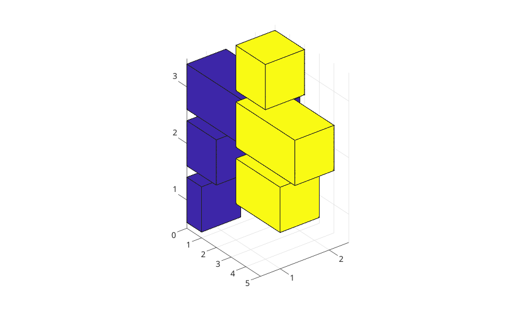
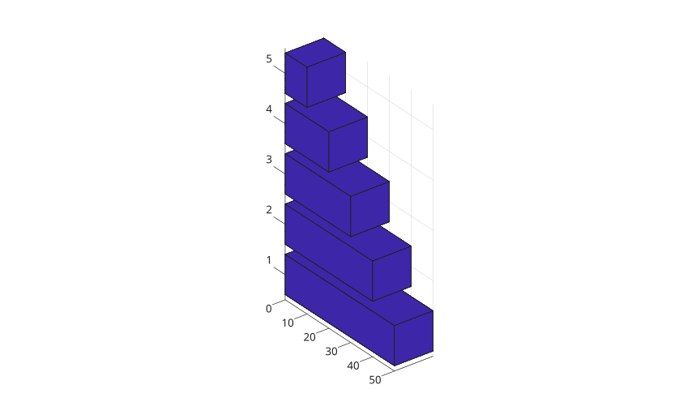
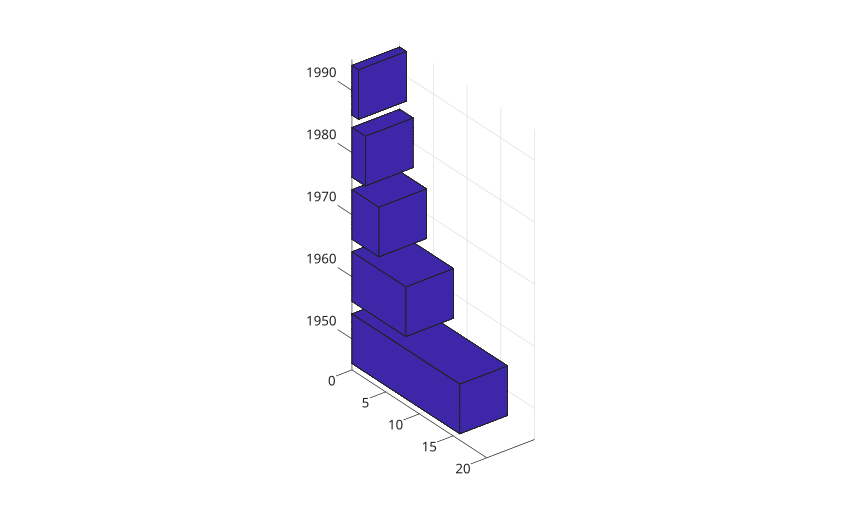
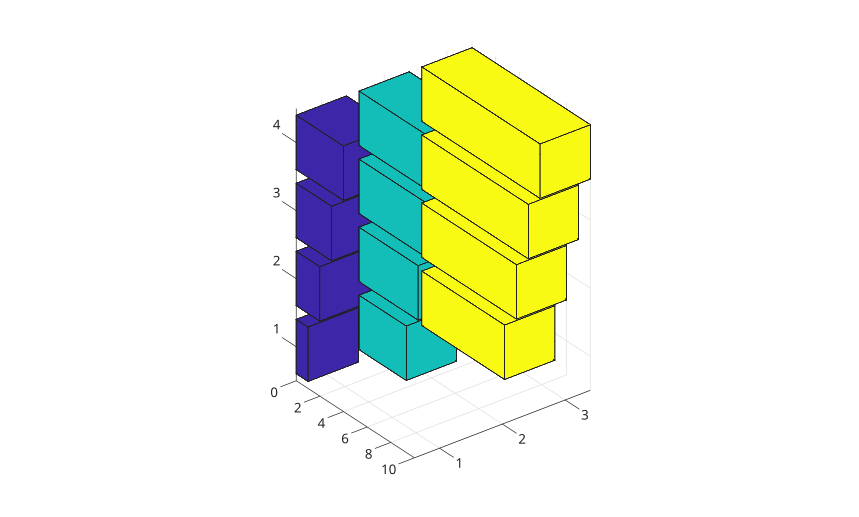
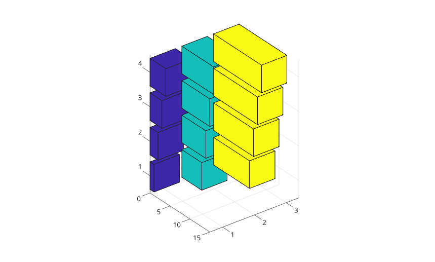
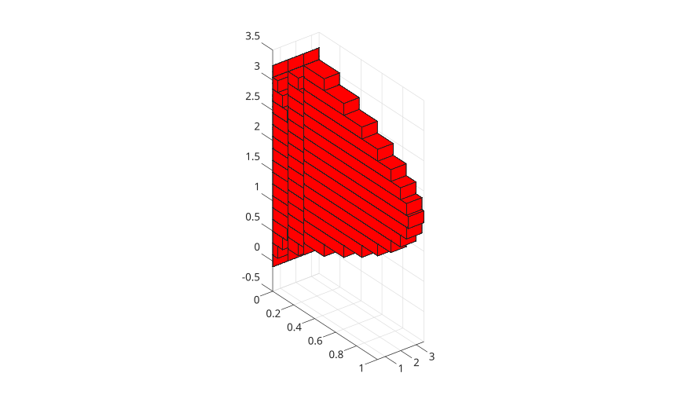
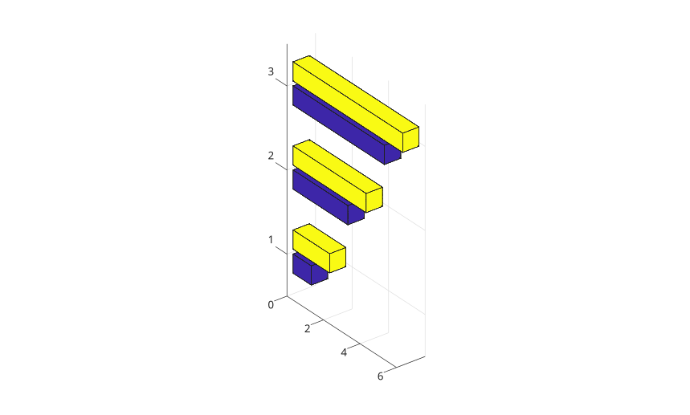
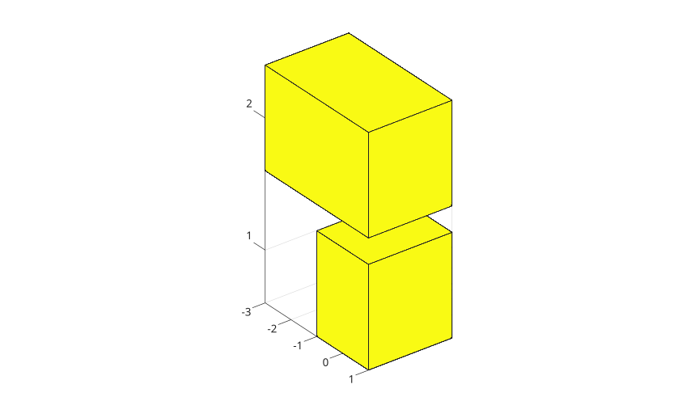

bar3h(Y)
bar3h(Z, Y)
bar3h(..., width)
bar3h(..., 'detached')
bar3h(..., 'grouped')
bar3h(..., 'stacked')
bar3h(..., color)
bar3h(parent, ...)
h = bar3h(...)
| Parameter | Description |
|---|---|
| Y | Numeric vector or matrix of bar lengths. |
| Z | row positions for the bars. |
| width | Relative bar width. The default value is 0.8. |
| color | color name or short color name for the bar faces. |
| Parameter | Description |
|---|---|
| h | surface graphics object or vector of surface graphics objects. |
bar3h displays horizontal 3-D bars extending from x = 0.
Use 'grouped' to group matrix columns at each row position and 'stacked' to stack matrix columns at each row position.
f = figure();
Y = [1 3; 2 4; 5 2];
bar3h(Y);
f = figure();
y = [50 40 30 20 10];
bar3h(y);
f = figure();
z = [1950 1960 1970 1980 1990];
y = [16 8 4 2 1];
bar3h(z, y);
f = figure();
y = [1 4 7; 2 5 8; 3 6 9; 4 7 10];
bar3h(y);
f = figure();
z = [1 2 3 4];
y = [1 5 9; 2 6 10; 3 7 11; 4 8 12];
bar3h(z, y);
f = figure();
z = 0:pi/16:pi;
y = [sin(z') / 4, sin(z') / 2, sin(z')];
bar3h(z, y, 1, "r");
f = figure();
y = [1 2; 3 4; 5 6];
bar3h(y, 'grouped');
f = figure();
y = [1 -2; -3 4];
bar3h(y, 'stacked');